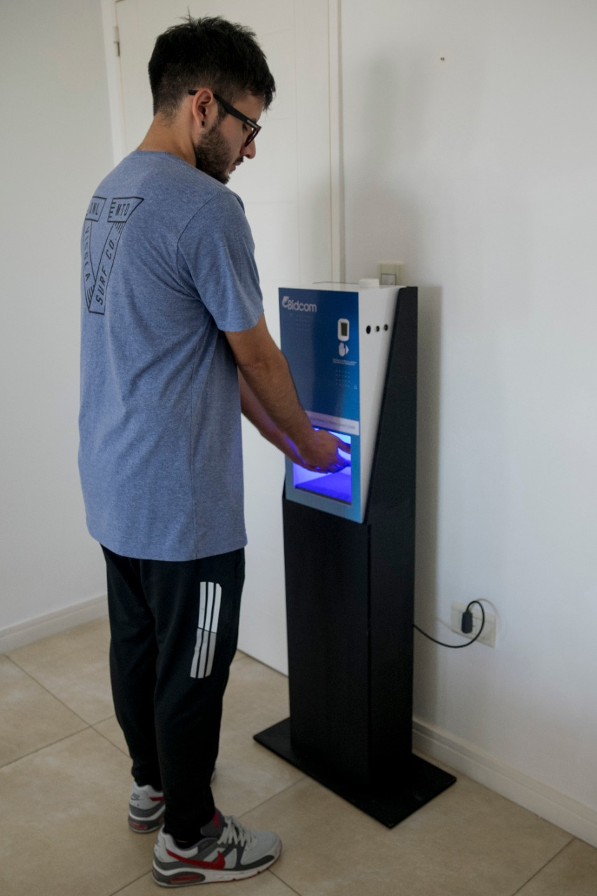

Características del Equipo
Alarma en caso de fiebre
Distancia de medición de 3 a 5 cm
Rango de medición : 32º - 42,2º
Margen de error +- 0.2 C
Tiempo de reacción 0.1 segundo
Sensado de temperatura a través de la muñeca, sin necesidad de contacto
Dispenser apto para apoyar en escritorio o para colgar de la pared.
Base de MDF opcional con valor adicional de $3800.
Conexión a 220V
Desarrollado para uso intensivo.
Posee sanitizador mediante pulverizador, no es a chorro.
Medidas: 50x25x15